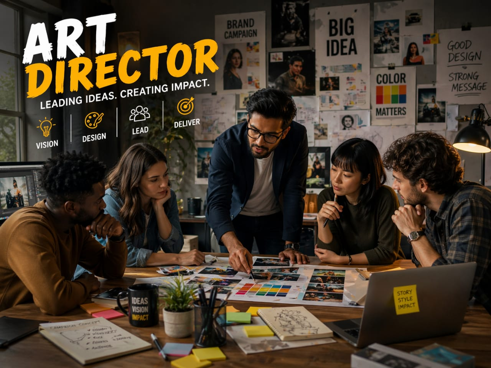

- "When you see a beautiful advertisement, movie scene, or website design
- Everything looks perfect — the colors, images, and layout work together
- Behind this, a team of designers and artists is creating this
- Someone guides the team and decides how everything should look and feel
- That person who guides is called an Art Director
- 👉 In simple words: Art Directors guide a team and make sure everything looks perfect."
Art Director
🧑🎨 What Do They Do?

🎓 How to Become an Art Director
After 10th, you can start building basic art and design skills through diploma or certificate courses.
Diploma in Art & Craft / Fine Arts
Duration: 1 to 2 Years
Eligibility: Class 10 pass
Entrance Exam: Merit-based or Institutional Aptitude Test
Certificate in Digital Design & Graphics
Duration: 3 to 6 Months
Eligibility: Class 10 pass
Entrance Exam: Direct Admission / Interview
📝 Exam Details
(Click on the exam name to see full details)
Institutional Aptitude Test Direct AdmissionNote: Most courses after 10th do not require national-level exams. Admission is usually based on creativity tests or direct selection.
After 12th, you can pursue professional degree courses in art and design. This is the main path to becoming an Art Director.
Bachelor of Visual Arts (BVA) / Fine Arts (BFA)
Duration: 4 Years
Eligibility: Class 12 pass (any stream)
Entrance Exam: CUET or college-level entrance
Bachelor of Design (B.Des) – Graphic / Communication Design
Duration: 4 Years
Eligibility: Class 12 pass (any stream)
Entrance Exam: UCEED / NID DAT / NIFT
Note: Most top design colleges require entrance exams. Building a strong portfolio is also very important.
After graduation, you can specialize in Art Direction and advanced design fields. This helps you move into leadership roles in creative industries.
PG Diploma in Art Direction / Production Design
Duration: 2 to 3 Years
Eligibility: Degree in Fine Arts, Design, Architecture, or related field
Entrance Exam: JET (FTII/SRFTI) or portfolio + interview
Master of Fine Arts (MFA) / Master of Design (M.Des)
Duration: 2 Years
Eligibility: BFA, BVA, or B.Des degree
Entrance Exam: CEED
📝 Exam Details
(Click on the exam name to see full details)
JET (FTII / SRFTI) CEED Portfolio ReviewNote: At this stage, your portfolio and experience matter more than marks.
Note:
In this field, your PORTFOLIO(work samples)is more important than your degree.
(Age limits, marks, and admission process may vary depending on the college or state. These courses are available in many colleges and universities across India. You can choose colleges based on your location, budget, and entrance exams.)
STEP 1
Imagine you are working as a 3D Animator in a studio.
STEP 2
One day, your team starts working on a new movie or game.
STEP 3
You are given a character and your job is to make it move and act.
STEP 4
You start working on how the character walks, jumps, and shows emotions.
STEP 5
You keep improving the movement until it looks smooth and natural.
STEP 6
After finishing, your animation is added to the movie or game.
STEP 7
When you see it on screen, you feel happy.
STEP 8
If this excites you, then this career may suit you.
Where do Art Directors work? (Job Roles + Growth)
These are some industries where Art Directors work.
You usually start in creative roles and grow into leadership positions.
🟢 Beginner Roles
✏️
Junior Graphic Designer
(After Certification / Degree)
Creates basic layouts, posters, and digital designs.
🖌️
Junior Concept Artist
(After Diploma / BFA)
Draws initial sketches and visual ideas for projects.
🎬
Storyboard Artist
(After Diploma / Degree)
Creates scene-by-scene visuals to plan storytelling.
📁
Assistant Art Director
(After B.Des / BFA)
Supports senior designers and manages visual assets.
🔵 Mid-Level Roles
🎨
Lead Concept Artist
(After B.Des / BFA + Experience)
Leads a team to finalize styles, colors, and mood boards.
🏗️
Production Designer
(After B.Des / M.Des)
Designs sets and environments for films, ads, or games.
💡
Senior Visual Development Artist
(After 5+ Years Experience)
Defines the final visual style including lighting and textures.
📊
Associate Art Director
(After BFA / M.Des + Leadership)
Manages teams and ensures consistency in visual design.
🟣 Advanced Roles
🎬
Art Director
(After M.Des / MFA + Experience)
Decides the complete visual style and creative direction.
🚀
Creative Director
(After Senior Leadership Experience)
Leads multiple projects and manages overall creative vision.
🧩
Design Supervisor
(After PG Diploma / M.Des)
Ensures all teams follow the visual direction properly.
🏆
Head of Visual Development
(After Extensive Experience)
Leads creative departments and defines overall project style.
🎬
International Animation Studios
Disney, Pixar, DreamWorks, Blue Zoo, Illumination, Studio Ghibli.
🎮
Global Game Development Companies
Rockstar Games, Ubisoft, Electronic Arts, Nintendo, Sony Santa Monica.
🎥
Top-tier VFX Houses
MPC, Industrial Light & Magic (ILM), Framestore, DNEG, Weta FX, The Mill.
📢
Global Advertising Agencies
Ogilvy, Leo Burnett, BBDO, McCann Worldgroup, Grey Group.
📺
Streaming Media Giants
Netflix Animation, Sony Pictures Animation, Warner Bros. Animation, Apple TV+.
🏢
Architectural Visualization Firms
Hayes Davidson, Vyonx, Mir, Neoscape.
🧠
Advanced Research & Development (R&D)
NVIDIA, Google Creative Lab, Adobe Research, Epic Games (Unreal Engine).
🌍
Abroad Opportunities
USA, Canada, UK, France, Japan.
(Click Yes or No for each question)
1. Do you enjoy watching animated movies or cartoons?
2. When you watch movies or play games, do you notice how characters move or act?
3. Do you like imagining stories or scenes in your mind?
4. Do you enjoy creative activities like drawing or designing?
5. Do you like bringing your ideas to life using a computer or digital tools?